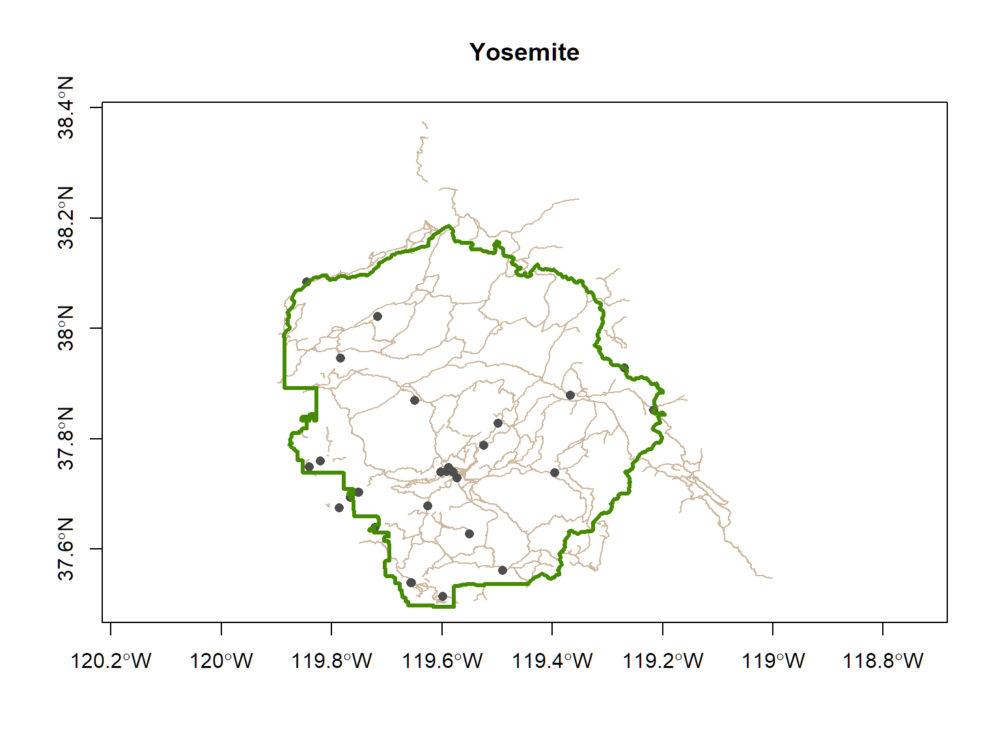
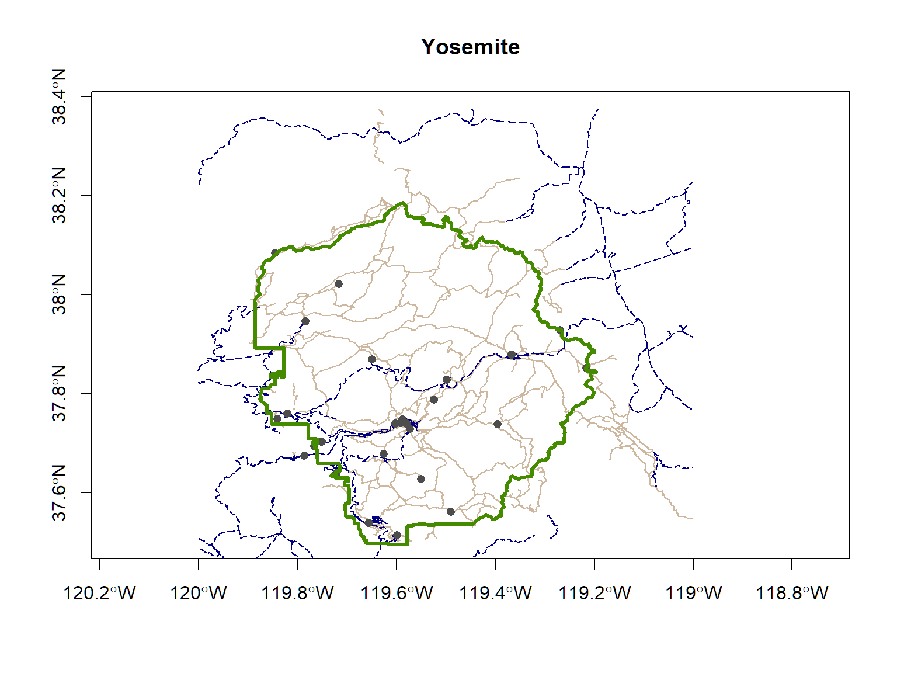

Working with sf Objects
Projections are particularly important whenever you want to:
The more generic term for projections as is Coordinate Reference System (CRS).
CRS also includes unprojected geographic coordinates (longitude & latitude).
A CRS has three parts:
All sf objects are able to store projection info.
st_read() imports the CRS info from standard GIS file formats
sf_crs() creates, views, or assigns the CRS
sf_transform() (re)projects sf objects into a different crs
The sf package uses the PROJ.4 library for established CRS. It provides two ways to specify a known projection:
The following are equivalent:
If you happen to know the proj4string, you can use it also
## Coordinate Reference System:
## EPSG: 32611
## proj4string: "+proj=utm +zone=11 +ellps=WGS84 +units=m +no_defs"The one-stop shop for finding proj4 strings and epsg numbers is http://www.spatialreference.org. (Google usually works also).
Reference code for your convenience:
View the CRS of a sf object:
## Coordinate Reference System:
## EPSG: 26911
## proj4string: "+proj=utm +zone=11 +ellps=GRS80 +towgs84=0,0,0,0,0,0,0 +units=m +no_defs"Occasionally, you have a sf object that doesn’t have a CRS recorded. This is most common when you are importing a CSV file and are turning it into a sf object. In thse cases, you can use st_crs() to assign the CRS.
Note: this is not the same as projecting data. You’re simply telling it the CRS.
You can project data from one CRS to another with:
st_transform(sf_object, new_crs)
Let’s ‘unproject’ the Yosemite trails layer from UTM to geographic coordinates.
Now that the trails are in geographic coordinates, we can overlay them on the boundary and historical points.
plot(st_geometry(yose_trails_ll), asp=1, col="bisque3", axes=T, main="Yosemite")
plot(st_geometry(yose_hp), col="gray30", pch=16, add=TRUE)
plot(st_geometry(yose_bnd), col=NA, border="chartreuse4", lwd=3, add=TRUE)
Import the roads and add those to your map.
[Solution]
gdb_fn <- "./data/yose_roads.gdb"
file.exists(gdb_fn)
yose_roads_utm <- st_read(gdb_fn, layer="Yosemite_Roads")
yose_roads_ll <- st_transform(yose_roads_utm, 4326)
plot(st_geometry(yose_trails_ll), asp=1, col="bisque3", axes=T, main="Yosemite")
plot(st_geometry(yose_roads_ll), col="navyblue", lwd=1, lty=5, add=TRUE)
plot(st_geometry(yose_hp), col="gray30", pch=16, add=TRUE)
plot(st_geometry(yose_bnd), col=NA, border="chartreuse4", lwd=3, add=TRUE)## [1] TRUE## Reading layer `Yosemite_Roads' from data source `C:\Workshops\R-Spatial\rspatial_mod\outputs\rspatial_scgis19\docs\data\yose_roads.gdb' using driver `OpenFileGDB'
## Simple feature collection with 823 features and 41 fields
## geometry type: MULTILINESTRING
## dimension: XYZ
## bbox: xmin: 234658.1 ymin: 4139484 xmax: 324852.6 ymax: 4250252
## epsg (SRID): 26911
## proj4string: +proj=utm +zone=11 +ellps=GRS80 +towgs84=0,0,0,0,0,0,0 +units=m +no_defs
Recall that sf objects are essentially data frames with a geometry column thrown in.